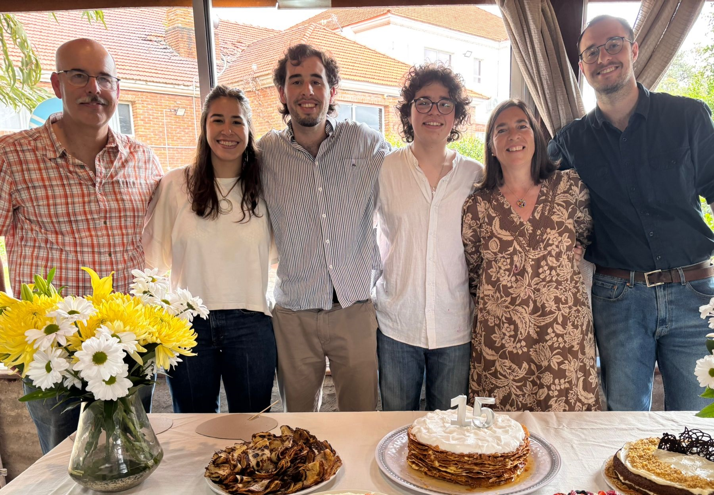
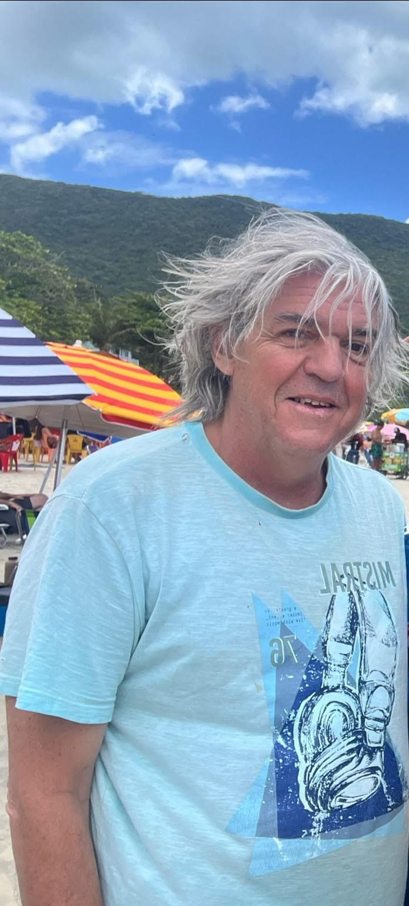
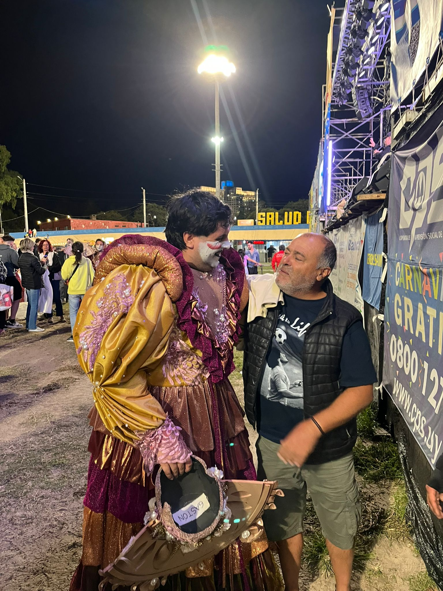
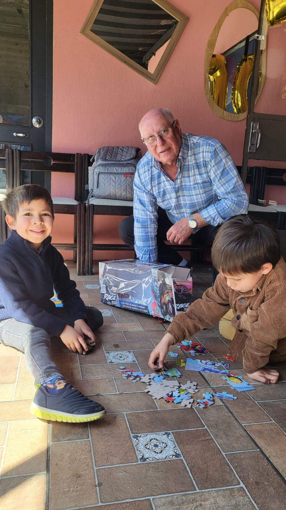
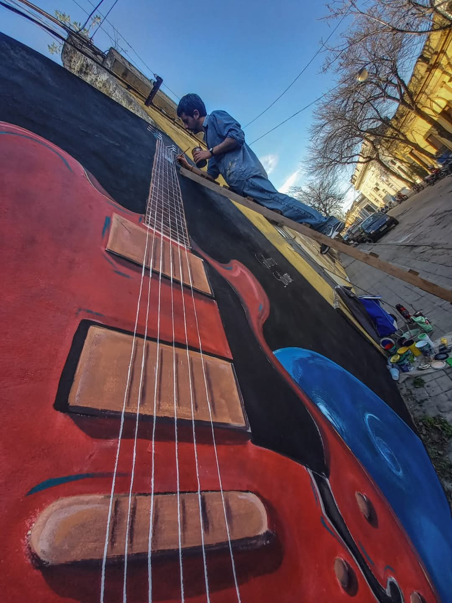

Eduardo Curto
Profe de matemática, gestor cultural y buscador de decires. Vive en la Santísima Trinidad de los Porongos y sabe encontrar allí y en todos lados gente talentosa, creativa y comprometida con sus comunidades. Al igual que uno de sus héroes, solo le teme a que el cielo caiga sobre su cabeza, y así le va.

Mario Fontes
Soy todo y nada a la vez, remo y remo de forma porfiada, como el hombre común, distinto a todos, igual. Empeñado en largas luchas, con el tiempo, que el tiempo, a su tiempo, me va prestando. Y así ya esta bien. No es triste la verdad, la vida, es para morirla, sin camuflaje. Porque los que siembran entre lágrimas, cantando cosecharan. Salú.

María Fernanda Nin
Trabajadora social de vocación primero y de profesión mucho después. Ariana, peleadora por las cosas que no pueden ser. Me trae a la calma la familia, hacer conservas y tejer.

Nacho
Porfiadamente padre, amigo, filósofo. Monoteísta, mi único Dios : Charly García. Caballo de fuego. Tratando de crecer y no de sentar cabeza.
Lucía Martínez
Me llamo Lucía Martínez. Me gusta escribir poesía, el año pasado edité mi primer libro. Me gusta leer y autocorregirme a través de otros poetas.

Leandro Modernel
Profe de Ed. Física en las postrimerías y con ganas de seguir en la vuelta. Murguista empedernido y feliz porque a "la Sofi" también le gusta. Quiero decir algunas cosas y "La Balsa" me dió la oportunidad.

Ricardo López
Un día me invitaron a formar parte de la Redacción de un periódico y acepté, seguro que desde allí podía transformar muchas cosas. Entonces era un aprendiz de impresor en una máquina que asustaba por su tamaño y sus ruidos. Hace 50 años de aquel día y aún sigo soñando. Lo afirmó Galeano y su saber refuerza mis esperanzas: "Mucha gente pequeña, en sus lugares pequeños, haciendo cosas pequeñas, puede cambiar el mundo".

El Yesus
Carpintero, pintor y diseñador gráfico.